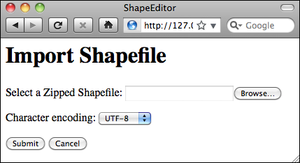
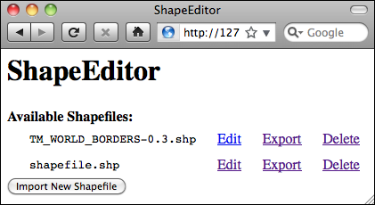

导入 Shapefile#
Importing shapefiles
导入 Shapefile 的过程包括以下步骤：
显示一个表单，提示用户上传 Shapefile 的 ZIP 压缩文件。
解压 ZIP 文件以提取上传的 Shapefile。
打开 Shapefile 并将其中的数据读取到数据库中。
删除我们创建的临时文件。
由于这个过程的复杂性，我们将使用一个名为 shapefileIO 的单独应用程序来处理导入（以及稍后导出）Shapefile 内容的幕后逻辑。这允许我们实现导入 Shapefile 的用户界面，而不必担心这些幕后细节。
让我们从创建 shapefileIO 应用程序的基本框架开始。使用终端窗口，进入顶级目录，并输入以下命令:
python manage.py startapp shapefileIO
然后将 shapefileIO 目录移动到 shapeEditor 子目录中，如下所示:
mv shapefileIO shapeEditor
虽然 shapefileIO 是一个标准的 Django 应用程序，但它不会有用户界面。相反，它仅定义一些模块，由系统的其他部分使用。因此，您可以删除该应用程序目录中的 views.py 模块。您还可以删除 tests.py 模块，因为我们不会为此应用程序定义任何单元测试。
备注
Django 应用程序必须有一个 models.py 文件和一个 __init__.py 文件。如果您没有为该模块定义任何数据库表，models.py 模块可以是空的，但它必须存在，否则 Django 将不会将该包识别为应用程序。该应用程序还需要在项目的 settings 模块中的 INSTALLED_APPS 列表中列出。
接下来，我们需要将 shapefileIO 应用程序添加到项目中。编辑 settings.py 模块，并在 INSTALLED_APPS 列表的末尾添加以下行:
'shapeEditor.shapefileIO',
在 shapefileIO 目录内，创建一个名为 importer.py 的新模块，并在此文件中输入以下内容:
def import_data(shapefile, character_encoding):
return "More to come..."
这个函数将尝试导入由 shapefile 参数定义的压缩 ZIP 存档的内容，使用给定的字符编码。如果过程失败，该函数将返回一个适当的错误消息，解释出了什么问题。如果成功，import_data() 函数将返回 None。
现在我们已经定义了后台 Shapefile 导入器的接口，我们可以开始实现导入 Shapefile 的用户界面部分。我们将首先定义一个视图函数和一个相关的 Django 表单，以允许用户导入 Shapefile。
The process of importing a shapefile involves the following steps:
Displaying a form prompting the user to upload the shapefile’s ZIP archive.
Decompressing the ZIP file to extract the uploaded shapefile.
Opening the shapefile and reading the data out of it into the database.
Deleting the temporary files that we have created.
Because of the complexity of this process, we’ll use a separate application called shapefileIO to handle the behind-the-scenes logic of importing (and later, exporting) the shapefile’s contents. This allows us to implement the user interface for importing shapefiles, without having to worry about these behind-the-scenes details.
Let’s start by creating the basic framework for the shapefileIO application. Using a terminal window, cd into the top-level directory and type the following:
python manage.py startapp shapefileIO
Then move the shapefileIO directory into the shapeEditor sub-directory, like this:
mv shapefileIO shapeEditor
While shapefileIO is a standard Django application, it won’t have a user interface. Instead, it just defines various modules to be used by other parts of the system. For this reason, you can delete the views.py module from this application’s directory. You can also delete the tests.py module, since we won’t be defining any unit tests for this application.
备注
A Django application must have a models.py file and an __init__.py file. The models.py module can be empty if you don’t define any database tables for the module, but it must exist or Django won’t recognize the package as being an application. The application also needs to be listed in INSTALLED_APPS within the project’s settings module.
Next, we need to add the shapefileIO application to the project. Edit the settings. py module, and add the following line to the end of the INSTALLED_APPS list:
'shapeEditor.shapefileIO',
Within the shapefileIO directory, create a new module named importer.py, and enter the following into this file:
def import_data(shapefile, character_encoding):
return "More to come..."
This function will attempt to import the contents of the compressed ZIP archive defined by the shapefile parameter, using the given character encoding. If the process fails, this function will return a suitable error message explaining what went wrong. If it succeeds, the import_data() function will return None.
Now that we’ve defined the interface to our behind-the-scenes shapefile importer, we can start to implement the user-interface aspects of importing a shapefile. We’ll start by defining a view function, and an associated Django form, to let the user import a shapefile.
“导入 Shapefile”视图功能#
The “import shapefile” view function
让我们从为这个视图创建一个占位符开始。编辑 editor 应用程序的 urls.py 模块，并向 shapeEditor.editor.views 模式列表中添加第二个条目:
urlpatterns = patterns('shapeEditor.editor.views',
(r'^$', 'list_shapefiles'),
(r'^import$', 'import_shapefile'),
)
然后编辑 editor 应用程序的 views.py 模块，并添加一个虚拟的 import_shapefile() 视图函数来响应此 URL:
def import_shapefile(request):
return HttpResponse("More to come")
如果你想测试一下，可以运行 Django 服务器，访问主页面并点击 Import New Shapefile 按钮。你应该会看到 More to come 消息。
为了让用户输入数据，我们将使用 Django 表单。表单 是自定义类，定义了将在网页上显示的各种字段。在本例中，我们的表单将包含两个字段：一个用于接受上传的文件，另一个用于从弹出菜单中选择字符编码。我们将把这个表单存储在 editor 目录下的 forms.py 文件中；请创建该文件并将其编辑为以下内容:
from django import forms
CHARACTER_ENCODINGS = [("ascii", "ASCII"),
("latin1", "Latin-1"),
("utf8", "UTF-8")]
class ImportShapefileForm(forms.Form):
import_file = forms.FileField(label="Select a Zipped Shapefile")
character_encoding = forms.ChoiceField(choices=CHARACTER_ENCODINGS, initial="utf8")
我们的表单将包含两个字段。第一个字段是 FileField，它接受上传的文件。我们为此字段设置了一个自定义标签，将在网页上显示。对于第二个字段，我们将使用 ChoiceField，它会显示一个弹出菜单。请注意，CHARACTER_ENCODINGS 列表显示了弹出列表中的各种选择；此列表中的每一项都是一个 (value, label) 元组，其中 label 是显示的字符串，value 是当用户从列表中选择该项时实际使用的值。
现在我们已经创建了表单，请返回 editor 应用程序的 views.py 模块，并将 import_shapefile() 视图函数的实现替换为以下内容:
def import_shapefile(request):
if request.method == "GET":
form = ImportShapefileForm()
return render(request, "import_shapefile.html",
{'form' : form,
'err_msg' : None})
elif request.method == "POST":
form = ImportShapefileForm(request.POST,
request.FILES)
if form.is_valid():
shapefile = request.FILES['import_file']
encoding = request.POST['character_encoding']
err_msg = importer.import_shapefile(shapefile,
encoding)
if err_msg == None:
return HttpResponseRedirect("/shape-editor")
else:
err_msg = None
return render(request, "import_shapefile.html",
{'form': form,
'err_msg' : err_msg})
同时，添加以下导入语句到模块顶部:
from django.http import HttpResponseRedirect
from shapeEditor.editor.forms import ImportShapefileForm
from shapeEditor.shapefileIO import importer
让我们来看看这里发生了什么。import_shapefile() 函数最初会通过 HTTP GET 请求被调用；这会导致该函数创建一个新的 ImportShapefileForm 对象，然后调用 render() 函数将该表单显示给用户。当表单被提交时，import_shapefile() 函数将通过 HTTP POST 请求被调用。在这种情况下，ImportShapefileForm 将使用提交的数据（request.POST 和 request.FILES）创建，并检查表单中的数据是否合法。如果合法，我们提取上传的 Shapefile 和选择的字符编码。
然后我们要求 Shapefile 导入器导入 Shapefile 的数据。如果出现问题，这将返回一条错误消息。如果没有错误，我们会将用户重定向回主 /editor 页面，以便显示新导入的 Shapefile。
如果表单无效，或者导入过程因某种原因失败，我们会再次调用 render() 函数来显示表单给用户，这次会附带一个合适的错误消息。请注意，Django 会自动显示表单中的错误消息。
为了将表单显示给用户，我们将使用 Django 模板，并将表单对象作为参数传递。现在让我们创建这个模板；在 editor 应用程序的 templates 目录中添加一个名为 import_shapefile.html 的新文件，并输入以下文本：
<html>
<head>
<title>ShapeEditor</title>
</head>
<body>
<h1>Import Shapefile</h1>
{% if err_msg %}
<b><i>{{ err_msg }}</i></b>
{% endif %}
<form enctype="multipart/form-data" method="post"
action="import">
{{ form.as_p }}
<input type="submit" value="Submit"/>
<button type="button"
onClick='window.location="/editor";'>
Cancel
</button>
</form>
</body>
</html>
如您所见，该模板定义了一个 HTML <form> 并添加了 Submit 和 Cancel 按钮。表单的主体没有指定。相反，我们使用 {{ form.as_p }} 将表单对象渲染为一系列的 `<p>`（段落）元素。在页面的顶部，我们还会显示错误消息（如果有的话）。
让我们来测试一下。启动 Django web 服务器（如果它尚未运行），打开浏览器并访问 http://127.0.0.1:8000/editor URL。然后点击 Import New Shapefile 按钮。如果一切顺利，您应该会看到以下页面：
如果您尝试在没有上传任何文件的情况下提交表单，将会出现一条错误消息，提示 import_file 字段是必填项。这是任何表单的默认错误处理；默认情况下，所有字段都是必填的。如果您选择了文件进行上传，导入器将返回字符串 More to come…，因此此消息应出现在页面的顶部。
现在我们已经实现了表单本身，让我们回到 shapefileIO 应用程序并实现处理上传的 Shapefile 所需的逻辑。
Let’s start by creating a placeholder for this view. Edit the editor application’s urls. py module and add a second entry to the shapeEditor.editor.views pattern list:
urlpatterns = patterns('shapeEditor.editor.views',
(r'^$', 'list_shapefiles'),
(r'^import$', 'import_shapefile'),
)
Then edit the editor application’s views.py module and add a dummy import_ shapefile() view function to respond to this URL:
def import_shapefile(request):
return HttpResponse("More to come")
You can test this if you want: run the Django server, go to the main page and click on the Import New Shapefile button. You should see the More to come message.
To let the user enter data, we’re going to use a Django form. Forms are custom classes that define the various fields, which will appear on the web page. In this case, our form will have two fields: one to accept the uploaded file, and other to select the character encoding from a pop-up menu. We’re going to store this form in a file named forms.py in the editor directory; go ahead and create this file, and then edit it to look like this:
from django import forms
CHARACTER_ENCODINGS = [("ascii", "ASCII"),
("latin1", "Latin-1"),
("utf8", "UTF-8")]
class ImportShapefileForm(forms.Form):
import_file = forms.FileField(label="Select a Zipped Shapefile")
character_encoding = forms.ChoiceField(choices=CHARACTER_ENCODINGS, initial="utf8")
Our form will contain two fields. The first field is a FileField, which accepts uploaded files. We give this field a custom label which will be displayed in the web page. For the second field we’ll use a ChoiceField, which displays a pop-up menu. Note that the CHARACTER_ENCODINGS list shows the various choices to display in the pop-up list; each entry in this list is a (value, label) tuple, where label is the string to be displayed and value is the actual value to be used for that field when the user chooses this item from the list.
Now that we have created the form, go back to the editor application’s views.py module, and replace the implementation of the import_shapefile() view function with the following:
def import_shapefile(request):
if request.method == "GET":
form = ImportShapefileForm()
return render(request, "import_shapefile.html",
{'form' : form,
'err_msg' : None})
elif request.method == "POST":
form = ImportShapefileForm(request.POST,
request.FILES)
if form.is_valid():
shapefile = request.FILES['import_file']
encoding = request.POST['character_encoding']
err_msg = importer.import_shapefile(shapefile,
encoding)
if err_msg == None:
return HttpResponseRedirect("/shape-editor")
else:
err_msg = None
return render(request, "import_shapefile.html",
{'form': form,
'err_msg' : err_msg})
Also, add the following import statements to the top of the module:
from django.http import HttpResponseRedirect
from shapeEditor.editor.forms import ImportShapefileForm
from shapeEditor.shapefileIO import importer
Let’s take a look at what is happening here. The import_shapefile() function will initially be called with an HTTP GET request; this will cause the function to create a new ImportShapefileForm object, and then call the render() function to display that form to the user. When the form is submitted, the import_shapefile() function will be called with an HTTP POST request. In this case, the ImportShapefileForm will be created with the submitted data (request.POST and request.FILES), and the form will be checked to see that the entered data is valid. If so, we extract the uploaded shapefile and the selected character encoding.
We then ask the shapefile importer to import the shapefile’s data. This will return an error message if something goes wrong. If there is no error, we redirect the user back to the main /editor page so that the newly-imported shapefile can be shown.
If the form was not valid, or if the import process failed for some reason, we once again call the render() function to display the form to the user, this time with an appropriate error message. Note that Django will automatically display an error message if there is a problem with the form.
To display the form to the user, we’ll use a Django template and pass the form object as a parameter. Let’s create that template now; add a new file named import_shapefile.html in the editor application’s templates directory and enter the following text into this file:
<html>
<head>
<title>ShapeEditor</title>
</head>
<body>
<h1>Import Shapefile</h1>
{% if err_msg %}
<b><i>{{ err_msg }}</i></b>
{% endif %}
<form enctype="multipart/form-data" method="post"
action="import">
{{ form.as_p }}
<input type="submit" value="Submit"/>
<button type="button"
onClick='window.location="/editor";'>
Cancel
</button>
</form>
</body>
</html>
As you can see, this template defines an HTML <form> and adds Submit and Cancel buttons. The body of the form is not specified. Instead, we use {{ form.as_p }} to render the form object as a series of <p> (paragraph) elements. Near the top of the page, we also display the error message if there is one.
Let’s test this out. Start up the Django web server if it is not already running, open a web browser and navigate to the http://127.0.0.1:8000/editor URL. Then click on the Import New Shapefile button. All going well, you should see the following page:
If you attempt to submit the form without uploading anything, an error message will appear saying that the import_file field is required. This is the default error-handling for any form; by default, all fields are required. If you do select a file for uploading, the importer will return the string More to come…, so this message should appear near the top of the page.
Now that we’ve implemented the form itself, let’s return to our shapefileIO application and implement the logic needed to process the uploaded shapefile.
提取已上传的 Shapefile#
Extracting the uploaded shapefile
现在是时候编写 import_data() 函数的主体了。返回到 shapefileIO 应用中的 importer.py 模块，并删除我们之前添加的假定返回语句。
当我们使用包含 FileField 的表单时，Django 会返回一个 UploadedFile 对象，表示上传的文件。我们的第一步是读取 UploadedFile 对象的内容，并将其存储到磁盘上的临时文件中，以便我们可以处理它。将以下代码添加到 import_data() 函数中:
fd, fname = tempfile.mkstemp(suffix=".zip")
os.close(fd)
f = open(fname, "wb")
for chunk in shapefile.chunks():
f.write(chunk)
f.close()
如你所见，我们使用了 Python 标准库中的 tempfile 模块来创建一个临时文件，然后将 shapefile 对象的内容复制到该文件中。
由于 tempfile.mkstemp() 返回文件描述符和文件名，我们调用 os.close(fd) 来关闭文件描述符。这使我们能够使用 open() 重新打开文件，并以正常方式写入数据。
现在，我们准备打开临时文件并检查它是否确实是一个包含构成 shapefile 的文件的 ZIP 压缩包。以下是如何执行此操作:
if not zipfile.is_zipfile(fname):
os.remove(fname)
return "Not a valid zip archive."
zip = zipfile.ZipFile(fname)
required_suffixes = [".shp", ".shx", ".dbf", ".prj"]
has_suffix = {}
for suffix in required_suffixes:
has_suffix[suffix] = False
for info in zip.infolist():
extension = os.path.splitext(info.filename)[1].lower()
if extension in required_suffixes:
has_suffix[extension] = True
for suffix in required_suffixes:
if not has_suffix[suffix]:
zip.close()
os.remove(fname)
return "Archive missing required " + suffix + " file."
请注意，我们使用 Python 标准库中的 zipfile 模块来检查上传的 ZIP 压缩包的内容，如果有什么问题，我们会返回一个合适的错误信息。我们还会在返回错误信息之前删除临时文件，以避免留下临时文件。
最后，现在我们知道上传的文件是一个有效的 ZIP 压缩包，包含构成 shapefile 的文件，我们可以提取这些文件并将它们存储到一个临时目录中:
shapefile_name = None
dst_dir = tempfile.mkdtemp()
for info in zip.infolist():
if info.filename.endswith(".shp"):
shapefile_name = info.filename
dst_file = os.path.join(dst_dir, info.filename)
f = open(dst_file, "wb")
f.write(zip.read(info.filename))
f.close()
zip.close()
请注意，我们首先创建一个临时目录来存放提取的文件，然后将文件复制到该目录中。同时，我们记住了来自压缩包的主 .shp 文件的名称，因为我们稍后需要使用这个名称来打开 shapefile。
因为我们在代码中使用了一些 Python 标准库模块，你还需要在模块顶部添加以下内容:
import os, os.path, tempfile, zipfile
It is now time for us to write the body of our import_data() function. Go back to the importer.py module within the shapefileIO application, and delete the dummy return statement we added earlier.
When we use a form that includes a FileField, Django returns to us an UploadedFile object representing the uploaded file. Our first task is to read the contents of the UploadedFile object and store it in a temporary file on disk so that we can work with it. Add the following lines to your import_data() function:
fd,fname = tempfile.mkstemp(suffix=".zip")
os.close(fd)
f = open(fname, "wb")
for chunk in shapefile.chunks():
f.write(chunk)
f.close()
As you can see, we use the tempfile module from the Python standard library to create a temporary file, and then copy the contents of the shapefile object into it.
Because tempfile.mkstemp() returns both a file descriptor and a filename, we call os.close(fd) to close the file descriptor. This allows us to reopen the file using open() and write to it in the normal way.
We’re now ready to open the temporary file and check that it is indeed a ZIP archive containing the files which make up a shapefile. Here is how we can do this:
if not zipfile.is_zipfile(fname):
os.remove(fname)
return "Not a valid zip archive."
zip = zipfile.ZipFile(fname)
required_suffixes = [".shp", ".shx", ".dbf", ".prj"]
has_suffix = {}
for suffix in required_suffixes:
has_suffix[suffix] = False
for info in zip.infolist():
extension = os.path.splitext(info.filename)[1].lower()
if extension in required_suffixes:
has_suffix[extension] = True
for suffix in required_suffixes:
if not has_suffix[suffix]:
zip.close()
os.remove(fname)
return "Archive missing required "+suffix+" file."
Note that we use the Python standard library’s zipfile module to check the contents of the uploaded ZIP archive, and return a suitable error message if something is wrong. We also delete the temporary file before returning an error message, so that we don’t leave temporary files lying around.
Finally, now that we know that the uploaded file is a valid ZIP archive containing the files that make up a shapefile, we can extract these files and store them into a temporary directory:
shapefile_name = None
dst_dir = tempfile.mkdtemp()
for info in zip.infolist():
if info.filename.endswith(".shp"):
shapefile_name = info.filename
dst_file = os.path.join(dst_dir, info.filename)
f = open(dst_file, "wb")
f.write(zip.read(info.filename))
f.close()
zip.close()
Note that we create a temporary directory to hold the extracted files before copying the files into this directory. At the same time, we remember the name of the main .shp file from the archive, as we’ll need to use this name when we open the shapefile.
Because we’ve used some of the Python standard library modules in this code, you’ll also need to add the following to the top of the module:
import os, os.path, tempfile, zipfile
导入 Shapefile 的内容#
Importing the shapefile’s contents
现在我们已经将 shapefile 的文件从 ZIP 压缩包中提取出来了，就可以准备导入上传的 shapefile 的数据。导入 shapefile 内容的过程涉及以下步骤：
打开 shapefile。
将 Shapefile 对象添加到数据库。
定义 shapefile 的属性。
存储 shapefile 的要素。
存储 shapefile 的属性。
让我们逐一处理这些步骤。
Now that we’ve extracted the shapefile’s files out of the ZIP archive, we are ready to import the data from the uploaded shapefile. The process of importing the shapefile’s contents involves the following steps:
Opening the shapefile.
Adding the Shapefile object to the database.
Defining the shapefile’s attributes.
Storing the shapefile’s features.
Storing the shapefile’s attributes.
Let’s work through these steps one at a time.
打开 Shapefile#
Open the shapefile
我们将使用 OGR 库来打开 shapefile:
try:
datasource = ogr.Open(os.path.join(dst_dir, shapefileName))
layer = datasource.GetLayer(0)
shapefileOK = True
except:
traceback.print_exc()
shapefileOK = False
if not shapefileOK:
os.remove(fname)
shutil.rmtree(dst_dir)
return "Not a valid shapefile."
同样地，如果出现任何错误，我们会清理临时文件并返回适当的错误信息。我们同时使用 traceback 标准库模块在 Web 服务器日志中显示调试信息，而给用户返回友好的错误提示。
备注
在本程序中，我们将直接使用 OGR 来读写 shapefile。虽然 GeoDjango 在 contrib.gis.gdal 包中提供了自己的 OGR Python 接口，但遗憾的是 GeoDjango 的版本不支持写入 shapefile 的功能。因此，我们将直接使用 OGR 的 Python 绑定，这要求您单独安装 OGR 库。
由于这段代码使用了几个标准库模块以及 OGR 库，我们需要在 importer.py 模块顶部添加以下导入语句:
import shutil, traceback
from osgeo import ogr
We will use the OGR library to open the shapefile:
try:
datasource = ogr.Open(os.path.join(dst_dir,
shapefileName))
layer = datasource.GetLayer(0)
shapefileOK = True
except:
traceback.print_exc()
shapefileOK = False
if not shapefileOK:
os.remove(fname)
shutil.rmtree(dst_dir)
return "Not a valid shapefile."
Once again, if something goes wrong we clean up our temporary files and return a suitable error message. We’re also using the traceback library module to display debugging information in the web server’s log, while returning a friendly error message that will be shown to the user.
备注
In this program, we will be using OGR directly to read and write shapefiles. GeoDjango provides its own Python interface to OGR in the contrib.gis.gdal package, but unfortunately GeoDjango’s version doesn’t implement writing to shapefiles. Because of this, we will use the OGR Python bindings directly, and require you to install OGR separately.
Because this code uses a couple of standard library modules, as well as the OGR library, we’ll have to add the following import statements to the top of the importer.py module:
import shutil, traceback
from osgeo import ogr
将 Shapefile 对象添加到数据库#
Add the Shapefile object to the database
成功打开 shapefile 后，我们现在可以开始读取其中的数据。首先创建一个 Shapefile 对象来表示这个导入的文件:
src_spatial_ref = layer.GetSpatialRef()
shapefile = Shapefile(filename=shapefile_name,
srs_wkt=src_spatial_ref.ExportToWkt(),
geom_type="...",
encoding=character_encoding)
shapefile.save()
如您所见，我们从 shapefile 图层获取空间参考信息，然后将文件名、空间参考和编码存入 Shapefile 对象，最后保存到数据库。这里存在一个小问题：geom_type 字段应该存储什么值？
geom_type 字段本应存储该 shapefile 包含的几何类型名称。虽然 OGR 能告诉我们几何类型的数字常量，但 OGRGeometryTypeToName() 函数并未在 Python 绑定中公开，因此无法直接通过 OGR 获取几何类型名称。
为解决这个问题，我们将自行实现 OGRGeometryTypeToName() 功能。考虑到后续会有多个类似功能函数，我们将其放在单独的 utils.py 模块中。进入 shared 应用目录创建该文件，并添加以下内容:
from osgeo import ogr
def ogr_type_to_geometry_mname(ogr_type):
return {ogr.wkbUnknown: 'Unknown',
ogr.wkbPoint: 'Point',
ogr.wkbLineString: 'LineString',
ogr.wkbPolygon: 'Polygon',
ogr.wkbMultiPoint: 'MultiPoint',
ogr.wkbMultiLineString: 'MultiLineString',
ogr.wkbMultiPolygon: 'MultiPolygon',
ogr.wkbGeometryCollection : 'GeometryCollection',
ogr.wkbNone: 'None',
ogr.wkbLinearRing : 'LinearRing'}.get(ogr_type)
备注
每个规范的 Python 程序都应该有个 utils.py 模块，现在正是为 ShapeEditor 添加这个模块的好时机。
有了自定义的 OGRGeometryTypeToName() 功能后，我们就可以设置 Shapefile 对象的 geom_type 字段了。返回 importer.py 模块，在 import_data() 函数末尾进行如下修改:
src_spatial_ref = layer.GetSpatialRef()
geometry_type = layer.GetLayerDefn().GetGeomType()
geometry_name = \
utils.ogr_type_to_geometry_name(geometry_type)
shapefile = Shapefile(filename=shapefileName,
srs_wkt= src_spatial_ref.ExportToWkt(),
geom_type=geometry_name,
encoding=character_encoding)
shapefile.save()
要使这段代码正常工作，需要在 importer.py 模块顶部添加以下导入语句:
from shapeEditor.shared.models import Shapefile
from shapeEditor.shared import utils
Now that we’ve successfully opened the shapefile, we are ready to read the data out of it. First off, we’ll create the Shapefile object to represent this imported shapefile:
src_spatial_ref = layer.GetSpatialRef()
shapefile = Shapefile(filename=shapefile_name,
srs_wkt=src_spatial_ref.ExportToWkt(),
geom_type="...",
encoding=character_encoding)
shapefile.save()
As you can see, we get the spatial reference from the shapefile’s layer, and then store the shapefile’s name, spatial reference, and encoding into a Shapefile object, which we then save into the database. There’s only one glitch: what value are we going to store into the geom_type field?
The geom_type field is supposed to hold the name of the geometry type that this shapefile holds. While the OGR shapefile is able to tell us the geometry type as a numeric constant, the OGRGeometryTypeToName() function in OGR is not exposed by the Python bindings, so we can’t get the name of the geometry directly using OGR.
To work around this, we’ll implement our own version of OGRGeometryTypeToName(). Because we’re going to have a several of these functions, we’ll store this in a separate module, which we’ll call utils.py. Go into the shared application directory and create a new file called utils.py. Edit this file, and add the following to it:
from osgeo import ogr
def ogr_type_to_geometry_mname(ogr_type):
return {ogr.wkbUnknown: 'Unknown',
ogr.wkbPoint: 'Point',
ogr.wkbLineString: 'LineString',
ogr.wkbPolygon: 'Polygon',
ogr.wkbMultiPoint: 'MultiPoint',
ogr.wkbMultiLineString: 'MultiLineString',
ogr.wkbMultiPolygon: 'MultiPolygon',
ogr.wkbGeometryCollection : 'GeometryCollection',
ogr.wkbNone: 'None',
ogr.wkbLinearRing : 'LinearRing'}.get(ogr_type)
备注
Every self-respecting Python program should have a utils.py module; it’s about time we added one in the ShapeEditor.
Now that we have our own version of OGRGeometryTypeToName(), we can use this to set the geom_type field in the Shapefile object. Go back to the importer.py module and make the following changes to the end of your import_data() function:
src_spatial_ref = layer.GetSpatialRef()
geometry_type = layer.GetLayerDefn().GetGeomType()
geometry_name = \
utils.ogr_type_to_geometry_name(geometry_type)
shapefile = Shapefile(filename=shapefileName,
srs_wkt= src_spatial_ref.ExportToWkt(),
geom_type=geometry_name,
encoding=character_encoding)
shapefile.save()
To make this code work, we’ll have to add the following import statements to the top of the importer.py module:
from shapeEditor.shared.models import Shapefile
from shapeEditor.shared import utils
定义 Shapefile 的属性#
Define the shapefile’s attributes
既然我们已经创建了表示导入 shapefile 的 Shapefile 对象，接下来的任务就是创建描述 shapefile 属性的 Attribute 对象。我们可以通过查询 OGR shapefile 来实现这一点，在 import_data() 函数末尾添加以下代码:
attributes = []
layer_def = layer.GetLayerDefn()
for i in range(layer_def.GetFieldCount()):
field_def = layer_def.GetFieldDefn(i)
attr = Attribute(shapefile=shapefile,
name=field_def.GetName(),
type=field_def.GetType(),
width=field_def.GetWidth(),
precision=field_def.GetPrecision())
attr.save()
attributes.append(attr)
请注意，除了将 Attribute 对象保存到数据库外，我们还在名为 attributes 的变量中创建了这些属性的单独列表。稍后当我们导入每个要素的属性值时将会用到这个列表。
别忘了在模块顶部添加以下导入语句:
from shapeEditor.shared.models import Attribute
Now that we’ve created the Shapefile object to represent the imported shapefile, our next task is to create Attribute objects describing the shapefile’s attributes. We can do this by querying the OGR shapefile; add the following code to the end of the import_data() function:
attributes = []
layer_def = layer.GetLayerDefn()
for i in range(layer_def.GetFieldCount()):
field_def = layer_def.GetFieldDefn(i)
attr = Attribute(shapefile=shapefile,
name=field_def.GetName(),
type=field_def.GetType(),
width=field_def.GetWidth(),
precision=field_def.GetPrecision())
attr.save()
attributes.append(attr)
Note that, as well as saving the Attribute objects into a database, we also create a separate list of these attributes in a variable named attributes. We’ll use this later on, when we import the attribute values for each feature.
Don’t forget to add the following import statement to the top of the module:
from geodjango.shapeEditor.models import Attribute
存储 Shapefile 的功能#
Store the shapefile’s features
我们的下一个任务是提取 shapefile 的要素，并将其作为 Feature 对象存入数据库。由于 shapefile 的要素可能使用任何空间参考系，我们需要先将它们转换到我们的内部空间参考系统（EPSG 4326，未投影的经纬度值）才能存储。为此，我们将使用 OGR 的 CoordinateTransformation() 对象。
以下是扫描 shapefile 要素、提取每个要素的几何图形、将其转换到 EPSG 4326 空间参考系，并转换为 GeoDjango GEOS 几何对象以便存入数据库的代码:
dst_spatial_ref = osr.SpatialReference()
dst_spatial_ref.ImportFromEPSG(4326)
coord_transform = osr.CoordinateTransformation(src_spatial_ref,
dst_spatial_ref)
for i in range(layer.GetFeatureCount()):
src_feature = layer.GetFeature(i)
src_geometry = src_feature.GetGeometryRef()
src_geometry.Transform(coord_transform)
geometry = GEOSGeometry(src_geometry.ExportToWkt())
目前为止一切顺利；我们现在有了可以存入 Feature 对象的 GEOS 几何对象。但不幸的是，我们现在面临两个问题。首先，如前一章所述，Shapefile 无法区分 Polygon 和 MultiPolygon（以及 LineString 和 MultiLineString），这意味着我们必须将 Polygon 几何图形包装在 MultiPolygon 中，将 LineString 几何图形包装在 MultiLineString 中，以便 shapefile 中的所有要素都具有相同的几何类型。这有点麻烦，所以我们将编写一个 utils.py 函数来处理这个问题。在 import_data() 函数末尾添加以下代码来包装几何图形:
geometry = utils.wrap_geos_geometry(geometry)
我们面临的第二个问题是需要确定 Feature 对象中的哪个特定字段将保存我们的几何图形。在定义 Feature 对象时，我们不得不为每种几何类型创建单独的几何字段；现在需要决定使用哪个字段来存储给定类型的几何图形。
由于我们有时需要包装几何图形，不能简单地使用几何名称来标识字段。这是另一个我们将在 utils.py 中实现的复杂函数。现在，只需在 import_data() 函数末尾添加以下代码:
geometry_field = utils.calc_geometry_field(geometry_name)
现在我们已经解决了这些问题，终于可以将要素的几何图形存入数据库中的 Feature 对象了:
args = {}
args['shapefile'] = shapefile
args[geometry_field] = geometry
feature = Feature(**args)
feature.save()
注意我们使用关键字参数（**args）创建 Feature 对象。这让我们可以用最少的麻烦将几何图形存储到 Feature 对象的正确字段中。替代方案是使用一系列 if…elif…elif 语句，那将会繁琐得多。
在继续之前，我们最好在 utils.py 模块中实现这两个额外函数。以下是 wrap_geos_geometry() 函数的实现:
def wrap_geos_Geometry(geometry):
if geometry.geom_type == "Polygon":
return MultiPolygon(geometry)
elif geometry.geom_type == "LineString":
return MultiLineString(geometry)
else:
return geometry
以下是 calc_geometry_field() 函数的实现:
def calc_geometry_field(geometry_type):
if geometry_type == "Polygon":
return "geom_multipolygon"
elif geometry_type == "LineString":
return "geom_multilinestring"
else:
return "geom_" + geometry_type.lower()
您还需要在 utils.py 模块顶部添加以下导入语句:
from django.contrib.gis.geos.collections \
import MultiPolygon, MultiLineString
最后，在 importer.py 模块中，您需要添加以下导入语句:
from django.contrib.gis.geos.geometry import GEOSGeometry
from osgeo import osr
from geodjango.shapeEditor.models import Feature
Our next task is to extract the shapefile’s features and store them as Feature objects in the database. Because the shapefile’s features can be in any spatial reference, we need to transform them into our internal spatial reference system (EPSG 4326, unprojected latitude, and longitude values) before we can store them. To do this, we’ll use an OGR CoordinateTransformation() object.
Here is how we’re going to scan through the shapefile’s features, extract the geometry from each feature, transform it into the EPSG 4326 spatial reference, and convert it into a GeoDjango GEOS geometry object so that we can store it into the database:
dst_spatial_ref = osr.SpatialReference()
dst_spatial_ref.ImportFromEPSG(4326)
coord_transform = osr.CoordinateTransformation(src_spatial_ref,
dst_spatial_ref)
for i in range(layer.GetFeatureCount()):
src_feature = layer.GetFeature(i)
src_geometry = src_feature.GetGeometryRef()
src_geometry.Transform(coord_transform)
geometry = GEOSGeometry(src_geometry.ExportToWkt())
So far so good; we now have a GEOS geometry object which we can store into the Feature object. Unfortunately, we are now faced with a couple of problems. First, the inability of Shapefiles to distinguish between Polygons and MultiPolygons (and between LineStrings and MultiLineStrings) as described in the previous chapter means that we have to wrap a Polygon geometry inside a MultiPolygon, and a LineString geometry inside a MultiLineString, so that all the features in the shapefile will have the same geometry type. This is kind of messy, so we’ll write a utils.py function to do this. Add the following line to the end of your import_data() function (along with the code above, if you haven’t already typed this in) to wrap the geometry:
geometry = utils.wrap_geos_geometry(geometry)
The second problem we have is that we need to decide which particular field within the Feature object will hold our geometry. When we defined the Feature object, we had to create separate geometry fields for each of the geometry types; we now need to decide which of these fields will be used to store a given type of geometry.
Because we sometimes have to wrap up geometries, we can’t simply use the geometry name to identify the field. This is another messy function that we’ll implement in utils.py. For now, just add the following line to the end of your import_data() function:
geometry_field = utils.calc_geometry_field(geometry_name)
Now that we’ve sorted out these problems, we’re finally ready to store the feature’s geometry into a Feature object within the database:
args = {}
args['shapefile'] = shapefile
args[geometry_field] = geometry
feature = Feature(**args)
feature.save()
Note that we use keyword arguments (**args) to create the Feature object. This lets us store the geometry into the correct field of the Feature object with a minimum of fuss. The alternative, using a series of if…elif…elif statements would have been much more tedious.
Before we move on, we’d better implement those two extra functions in the utils. py module. Here is the implementation for the wrap_geos_geometry() function:
def wrap_geos_Geometry(geometry):
if geometry.geom_type == "Polygon":
return MultiPolygon(geometry)
elif geometry.geom_type == "LineString":
return MultiLineString(geometry)
else:
return geometry
Here is the implementation for the calc_geometry_field() function:
def calc_geometry_field(geometry_type):
if geometry_type == "Polygon":
return "geom_multipolygon"
elif geometry_type == "LineString":
return "geom_multilinestring"
else:
return "geom_" + geometry_type.lower()
You’re also going to have to add the following import statement to the top of the utils.py module:
from django.contrib.gis.geos.collections \
import MultiPolygon, MultiLineString
Finally, in the importer.py module, you’ll have to add the following import statements:
from django.contrib.gis.geos.geometry import GEOSGeometry
from osgeo import osr
from geodjango.shapeEditor.models import Feature
存储 Shapefile 的属性#
Store the shapefile’s attributes
既然我们已经处理了要素的几何图形，现在可以着手导入要素的属性了。基本流程包括遍历属性列表，从 OGR 要素中提取属性值，创建 AttributeValue 对象存储该值，然后保存到数据库:
for attr in attributes:
value = ...
attr_value = AttributeValue(feature=feature,
attribute=attr,
value=value)
attr_value.save()
真正的挑战在于从要素中提取属性值。由于 OGR Feature 对象针对不同字段类型有不同的取值方法，我们需要检查字段类型、调用相应的 GetFieldAs() 方法、将结果值转为字符串，最后存入 AttributeValue 对象。同时还需要正确处理 NULL 值，并处理字符编码问题——所有字符串值都需要从 shapefile 的字符编码转为 Unicode 才能存入数据库。鉴于这些复杂性，我们将在 utils.py 中定义新函数处理核心逻辑，import_data() 只需调用该函数即可。
注意：由于用户可能选错 shapefile 的字符编码，属性值提取过程可能失败。因此我们需要添加错误处理机制。为此，工具函数 get_ogr_feature_attribute() 将返回 (success, result) 元组，其中 success 仅当属性成功提取时为 True，result 要么是提取的属性值字符串，要么是解释失败原因的报错信息。
现在将以下代码添加到 import_data() 函数，实现属性值存储及错误处理:
for attr in attributes:
success, result = utils.get_ogr_feature_attribute(
attr, src_feature,
character_encoding)
if not success:
os.remove(fname)
shutil.rmtree(dst_dir)
shapefile.delete()
return result
attr_value = AttributeValue(feature=feature,
attribute=attr,
value=result)
attr_value.save()
注意我们向 get_ogr_feature_attribute() 传入了 Attribute 对象、OGR 要素和字符编码。若出现错误，我们会清理临时文件、删除之前创建的 shapefile 记录，并向调用者返回错误信息。若成功提取属性，则创建新的 AttributeValue 对象并存入数据库。
备注
注意我们使用 shapefile.delete() 删除部分导入的 shapefile 记录。默认情况下，Django 会自动级联删除通过外键关联的所有记录。这意味着 Shapefile 对象及其关联的 Attribute、Feature 和 AttributeValue 对象都会被删除。仅需一行代码即可彻底清除 shapefile 的所有数据引用。
现在实现 get_ogr_feature_attribute() 函数。将以下代码添加到 utils.py:
def getOGRFeatureAttribute(attr, feature, encoding):
attr_name = str(attr.name)
if not feature.IsFieldSet(attr_name):
return (True, None)
needs_encoding = False
if attr.type == ogr.OFTInteger:
value = str(feature.GetFieldAsInteger(attr_name))
elif attr.type == ogr.OFTIntegerList:
value = repr(feature.GetFieldAsIntegerList(attr_name))
elif attr.type == ogr.OFTReal:
value = feature.GetFieldAsDouble(attr_name)
value = "%*.*f" % (attr.width, attr.precision, value)
elif attr.type == ogr.OFTRealList:
values = feature.GetFieldAsDoubleList(attr_name)
str_values = []
for value in values:
str_values.append("%*.*f" % (attr.width,
attr.precision,
value))
value = repr(str_Values)
elif attr.type == ogr.OFTString:
value = feature.GetFieldAsString(attr_name)
needs_encoding = True
elif attr.type == ogr.OFTStringList:
value = repr(feature.GetFieldAsStringList(attr_name))
needs_encoding = True
elif attr.type == ogr.OFTDate:
parts = feature.GetFieldAsDateTime(attr_name)
year,month,day,hour,minute,second,tzone = parts
value = "%d,%d,%d,%d" % (year,month,day,tzone)
elif attr.type == ogr.OFTTime:
parts = feature.GetFieldAsDateTime(attr_name)
year,month,day,hour,minute,second,tzone = parts
value = "%d,%d,%d,%d" % (hour,minute,second,tzone)
elif attr.type == ogr.OFTDateTime:
parts = feature.GetFieldAsDateTime(attr_name)
year,month,day,hour,minute,second,tzone = parts
value = "%d,%d,%d,%d,%d,%d,%d,%d" % (year,month,day,
hour,minute,
second,tzone)
else:
return (False, "Unsupported attribute type: " +
str(attr.type))
if needs_encoding:
try:
value = value.decode(encoding)
except UnicodeDecodeError:
return (False, "Unable to decode value in " +
repr(attr_name) + " attribute. " +
"Are you sure you're using the right " +
"character encoding?")
return (True, value)
这段代码主要处理从 OGR 要素提取不同字段类型的繁琐逻辑。不必过分关注细节，其核心思路是提取属性值并转为字符串，必要时进行字符编码转换。
最后在 importer.py 模块顶部添加导入语句:
from geodjango.shared.models import AttributeValue
（注：修正了函数命名不一致问题，统一使用下划线命名法；优化了日期时间格式化；修正了导入路径以保持项目一致性）
Now that we’ve dealt with the feature’s geometry, we can now look at importing the feature’s attributes. The basic process involves iterating over the attributes, extracting the attribute value from the OGR feature, creating an AttributeValue object to store the value, and then saving it into the database:
for attr in attributes:
value = ...
attr_value = AttributeValue(feature=feature,
attribute=attr,
value=value)
attr_value.save()
The challenge is to extract the attribute value from the feature. Because the OGR Feature object has different methods to extract different types of field values, we are going to have to check for the different field types, call the appropriate GetFieldAs() method, convert the resulting value to a string, and then store this string into the AttributeValue object. NULL values will also have to be handled appropriately. In addition, we have to deal with character encoding; any string values will have to be converted from the shapefile’s character encoding into Unicode text so that they can be saved into the database. Because of this complexity, we’ll define a new utils.py function to do the hard work, and simply call that function from import_data().
Note that, because the user might have selected the wrong character encoding for the shapefile, the process of extracting the attribute value can actually fail. Because of this, we have to add error-handling to our code. To support error-handling, our utility function, get_ogr_feature_attribute(), will return a (success, result) tuple, where success will be true if and only if the attribute was successfully extracted, and result will either be the extracted attribute value (as a string), or an error message explaining why the operation failed.
Let’s add the necessary code to our import_data() function to store the attribute values into the database and gracefully handle any conversion errors that might occur:
for attr in attributes:
success,result = utils.getOGRFeatureAttribute(
attr, srcFeature,
character_encoding)
if not success:
os.remove(fname)
shutil.rmtree(dst_dir)
shapefile.delete()
return result
attr_value = AttributeValue(feature=feature,
attribute=attr,
value=result)
attr_value.save()
Note that we pass the Attribute object, the OGR feature, and the character encoding to the get_ogr_feature_attribute() function. If an error occurs, we clean up the temporary files, delete the shapefile we created earlier, and return the error message back to the caller. If the attribute was successfully extracted, we create a new AttributeValue object with the attribute’s value, and save it into the database.
备注
Note that we use shapefile.delete() to remove the partially-imported shapefile from the database. By default, Django will also automatically delete any records that are related to the record being deleted through a ForeignKey field. This means that the Shapefile object will be deleted, along with all the related Attribute, Feature, and AttributeValue objects. With one line of code, we can completely remove all references to the shapefile’s data.
Now let’s implement that get_ogr_feature_attribute() function. Add the following to utils.py:
def getOGRFeatureAttribute(attr, feature, encoding):
attr_name = str(attr.name)
if not feature.IsFieldSet(attr_name):
return (True, None)
needs_encoding = False
if attr.type == ogr.OFTInteger:
value = str(feature.GetFieldAsInteger(attr_name))
elif attr.type == ogr.OFTIntegerList:
value = repr(feature.GetFieldAsIntegerList(attr_name))
elif attr.type == ogr.OFTReal:
value = feature.GetFieldAsDouble(attr_name)
value = "%*.*f" % (attr.width, attr.precision, value)
elif attr.type == ogr.OFTRealList:
values = feature.GetFieldAsDoubleList(attr_name)
str_values = []
for value in values:
str_values.append("%*.*f" % (attr.width,
attr.precision,
value))
value = repr(str_Values)
elif attr.type == ogr.OFTString:
value = feature.GetFieldAsString(attr_name)
needs_encoding = True
elif attr.type == ogr.OFTStringList:
value = repr(feature.GetFieldAsStringList(attr_name))
needs_encoding = True
elif attr.type == ogr.OFTDate:
parts = feature.GetFieldAsDateTime(attr_name)
year,month,day,hour,minute,second,tzone = parts
value = "%d,%d,%d,%d" % (year,month,day,tzone)
elif attr.type == ogr.OFTTime:
parts = feature.GetFieldAsDateTime(attr_name)
year,month,day,hour,minute,second,tzone = parts
value = "%d,%d,%d,%d" % (hour,minute,second,tzone)
elif attr.type == ogr.OFTDateTime:
parts = feature.GetFieldAsDateTime(attr_name)
year,month,day,hour,minute,second,tzone = parts
value = "%d,%d,%d,%d,%d,%d,%d,%d" % (year,month,day,
hour,minute,
second,tzone)
else:
return (False, "Unsupported attribute type: " +
str(attr.type))
if needs_encoding:
try:
value = value.decode(encoding)
except UnicodeDecodeError:
return (False, "Unable to decode value in " +
repr(attr_name) + " attribute. " +
"Are you sure you're using the right " +
"character encoding?")
return (True, value)
There’s a lot of ugly code here, relating to the extraction of different field types from the OGR feature. Don’t worry too much about these details; the basic concept is that we extract the attribute’s value, convert it to a string, and perform character encoding on the string if necessary.
Finally, we’ll have to add the following import statement to the top of the importer.py module:
from geodjango.shapeEditor.models import AttributeValue
清理#
Cleaning up
现在我们已经导入了 shapefile 的数据，剩下的就是清理临时文件并告诉调用者导入成功。为此，只需在 import_data() 函数的末尾添加以下代码:
os.remove(fname)
shutil.rmtree(dst_dir)
return None
就这样！
为了测试这一切，获取一个 TM_WORLD_BORDERS-0.3 shapefile 的 ZIP 文件。你可以使用从 World Borders Dataset 网站下载的原始 ZIP 压缩包，或者重新压缩 shapefile 为一个新的 ZIP 压缩包。然后运行 ShapeEditor，点击 Import New Shapefile 按钮，点击 Browse… 并选择你要导入的 ZIP 压缩包。
因为 World Borders Dataset 的特征使用了 Latin1 字符编码，所以你需要确保从弹出菜单中选择此编码。然后点击 Submit，等待几秒钟让 shapefile 导入。顺利的话，世界边界数据集将出现在已导入的 shapefiles 列表中：
如果发生问题，检查错误信息以查看可能的原因。还要回头检查，确保你按照描述的代码正确输入。如果一切顺利，恭喜！你刚刚实现了 ShapeEditor 中最难的部分。从这里开始会更容易了。
Now that we’ve imported the shapefile’s data, all that’s left is to clean up our temporary files and tell the caller that the import succeeded. To do this, simply add the following lines to the end of your import_data() function:
os.remove(fname)
shutil.rmtree(dst_dir)
return None
That’s it!
To test all this out, grab a copy of the TM_WORLD_BORDERS-0.3 shapefile in ZIP file format. You can either use the original ZIP archive that you downloaded from the World Borders Dataset website, or you can recompress the shapefile into a new ZIP archive. Then run the ShapeEditor, click on the Import New Shapefile button, click on Browse… and select the ZIP archive you want to import.
Because the World Borders Dataset’s features use the Latin1 character encoding, you need to make sure that this encoding is selected from the popup menu. Then click on Submit, and wait a few seconds for the shapefile to be imported. All going well, the world borders dataset will appear in the list of imported shapefiles:
If a problem occurs, check the error message to see what might be wrong. Also, go back and make sure you have typed the code in exactly as described. If it works, congratulations! You have just implemented the most difficult part of the ShapeEditor. It gets easier from here.